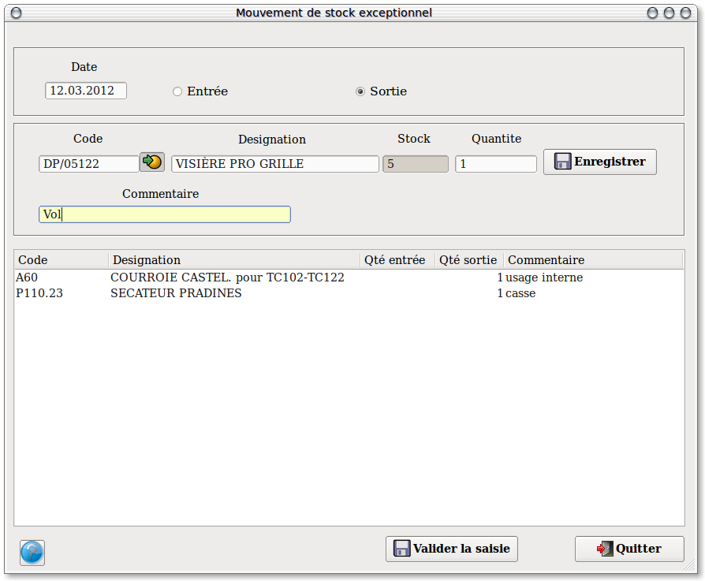

~ Facturation Laurux ~

~ Facturation Laurux ~ |
|
|
|
Regularisations

A partir de cet écran vous allez saisir vos mouvements de stock exceptionnels soit en entrée soit en sortie .
Saisir en premier la date du mouvement puis son
sens. (Vous devrez faire une saisie différente pour les sorties et les
entrées).
Saisir ensuite vos produits en tapant leur code ou
bien en les sélectionnant a l'aide du bouton de recherche. La
désignation du produit et la quantité en stock s'affichent, le curseur
se positionne sur la zone 'Quantité', saisir puis valider la quantité,
le curseur se positionne sur la zone 'Commentaire', saisir dans cette
zone la nature explicative du mouvement, validez votre ligne en
cliquant sur "Enregistrer".
En fin de saisie, enregistrez votre travail en cliquant sur "Valider la saisie".
Vous pourrez à tout moment imprimer vos régularisations par le menu 'Edition des régularisations'.
Rappel : Pour modifier une ligne, double-cliquez dessus pour la rendre accessible.
Rappel : Pour supprimer une ligne, sélectionnez-la avec la souris puis pressez la touche "Suppr".
----------------------------------------------------------------------------------------------------------------------